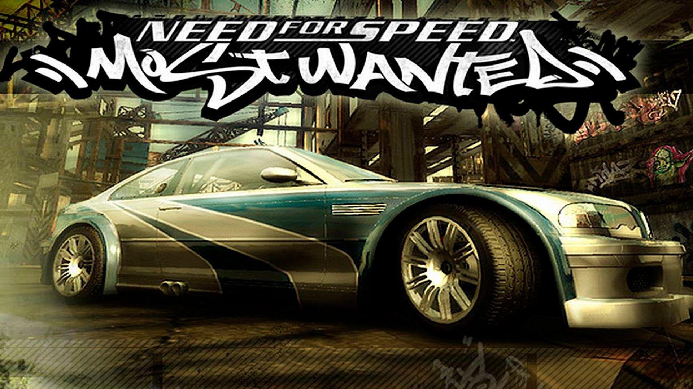

About Me
Hi my name is Aaron Museo and i like programming and making money. Here are languages i find quite cool!
- C++
- Kotlin
- Java
I am from Kenya.

Here is a little more about me
My name is Aaron Museo, and I have a passion for three things in life - money, games, and coding. I thrive on the excitement of financial endeavors, whether it's through investments, entrepreneurship, or exploring innovative ways to generate income. Money, to me, represents both a means to achieve financial stability and the freedom to pursue my interests.
When I'm not immersed in the world of finance, you'll often find me immersed in the virtual realm of gaming. Video games have been a constant source of joy and relaxation in my life, offering endless adventures and challenges that keep my competitive spirit alive.
In addition to my interests in finance and gaming, I have a deep love for coding. I enjoy the thrill of creating software, solving complex problems, and bringing ideas to life through programming. Whether it's web development, app development, or diving into the world of data science, coding allows me to explore new horizons and continuously expand my skill set.
My triad of passions - money, games, and coding - reflects my multifaceted approach to life, where I seek both financial success, personal enjoyment, and the intellectual challenges that coding provides, all in equal measure.
This is the end!.
Here are some games i like to play
This is "Rainbow Six Siege" it is a popular tactical shooter where players assume the roles of elite counter-terrorism operators. It's known for its intense, strategic gameplay and destructible environments, offering a highly competitive multiplayer experience.

The "Need for Speed" game series has been a driving force in the world of racing video games for decades. Known for its high-octane races, customization options, and diverse car selection, it has consistently delivered adrenaline-pumping experiences for gamers and car enthusiasts alike.
Here are also some animes i like to watch

"Bleach" is a beloved anime series that follows the adventures of Ichigo Kurosaki, a Soul Reaper with the power to combat supernatural threats. Known for its action-packed battles and compelling characters, it has remained a fan favorite in the anime community.
"Tokyo Revengers" is a thrilling manga and anime series that follows the story of Takemichi Hanagaki, who discovers he can time-travel to his teenage years and tries to prevent a tragic future involving his friends and a violent gang. Filled with action, suspense, and intricate character relationships, it has captivated audiences with its unique blend of time-travel elements and gang drama.